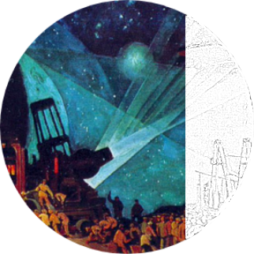
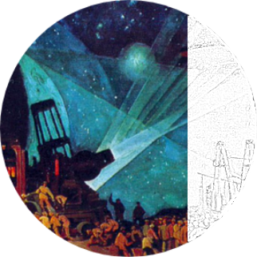
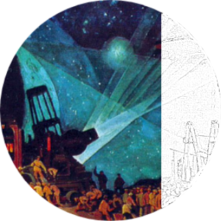
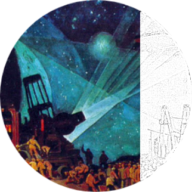

I am a C.V. Starr Postdoctoral Fellow (2021—) at the Princeton Neuroscience Institute, working under the joint supervision of Annegret Falkner and Mala Murthy.
My graduate work with Jonathan Whitlock (2015—2019) was completed at the Kavli Institute for Systems Neuroscience/CNC in Norway. I am interested in understanding neuronal dynamics underlying natural behavior and social communication.
SELECTED PUBLICATIONS
—Tombaz T*†, Dunn BA*, Hovde K, Cubero RJ, Mimica B, Mamidanna P, Roudi Y, Whitlock JR† (2020). Action representation in the mouse parieto-frontal network. Sci Rep 10 (5559). [html] [pdf] [cite]
—Mimica B*†, Dunn AB*, Tombaz T, Bojja VPTNCS, Whitlock RJ† (2018). Efficient cortical coding of 3D posture in freely moving rats. Science 362, 584-589. [html] [pdf] [cite] []
[complete Google Scholar list]
Some of my favorite pastimes, covered in the thoughts section, include r/w literature & Python, enjoying pisco sour and enduring perpetual misery with Manchester United.